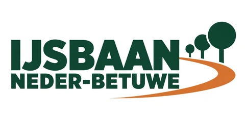
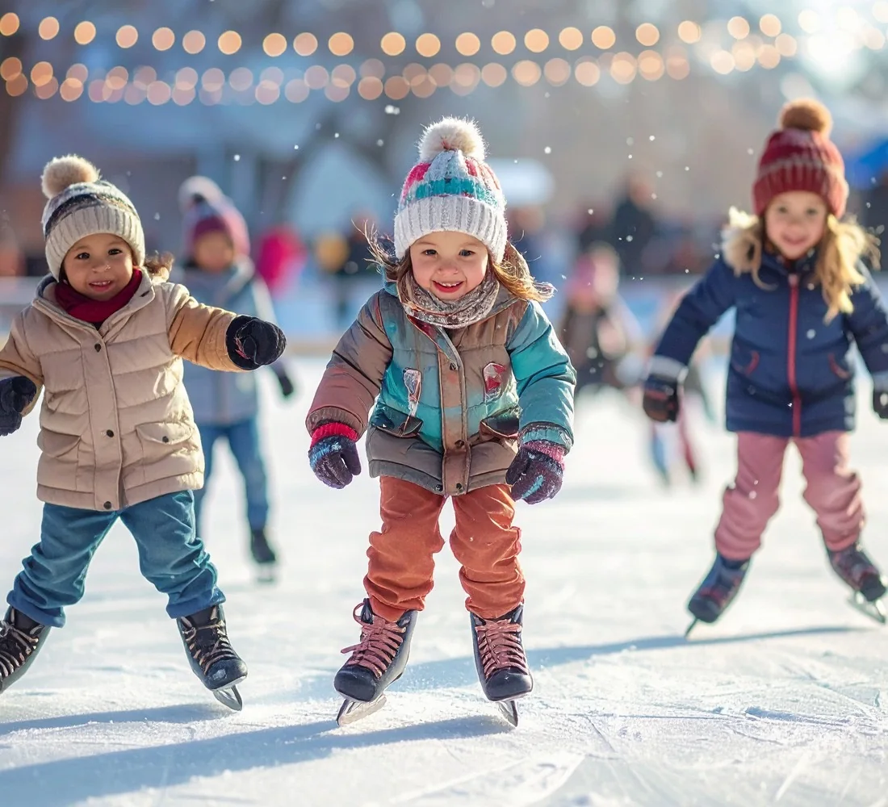
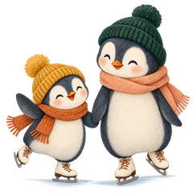
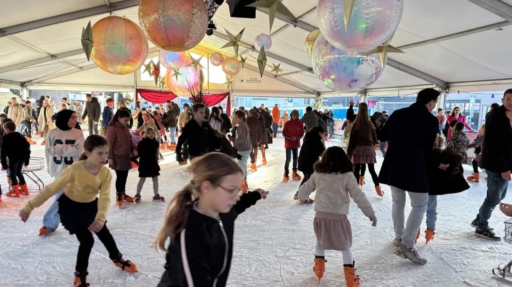
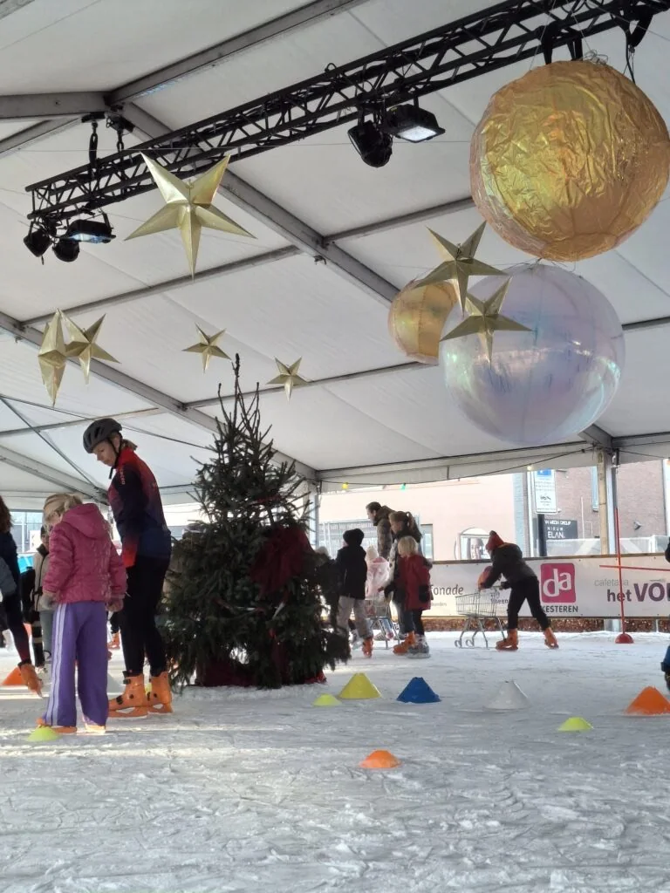

Vanaf 11 december
Winter 2026 / 2027
Plan alvast jouw rondje. Bekijk het voorlopige rooster met alle schaatsdagen en sluitingsdagen.
Bekijk openingstijden
Word sponsor
DE WINTER KOMT NAAR OPHEUSDEN
Muts op, vrienden mee en het ijs op.
Van je eerste voorzichtige meters tot dat ene extra rondje: deze winter maken we samen in Opheusden.
ONZE WINTER, ONS IJS
De eerste meters aan een vertrouwde hand. Samen lachen om een wiebelig rondje. En dat trotse gezicht wanneer het ineens helemaal zelf lukt. Dát zijn de momenten waar onze winter om draait.
Vanaf 11 december 2026 ligt de kunstijsbaan van IJsbaan Neder-Betuwe op het grasveld bij het gemeentehuis in Opheusden. Voor kinderen, ouders en iedereen die zin heeft in een winterse ontmoeting, gewoon bij ons in de buurt.
Word sponsor van deze winter

ZET HET IN JE AGENDA
Alles voor jouw bezoek aan
de wintereditie in Opheusden.
Winter 2026 / 2027
Plan alvast jouw rondje. Bekijk het voorlopige rooster met alle schaatsdagen en sluitingsdagen.
Bekijk openingstijdenGrasveld bij het gemeentehuis
Dit jaar schaatsen we bij het gemeentehuis. Volgend jaar reist de ijsbaan door naar Kesteren.
Bekijk de locatieVerkrijgbaar op de baan
Ook lokale ondernemers delen schaatsmunten uit via een actie bij aankopen. Meer over de deelnemende winkels volgt.
Goed om te wetenOpheusden · 2026 / 2027
Na school nog even schaatsen. Of in de vakantie al lekker vroeg de baan op. Kies hieronder jouw dag.
Vanaf 11 december 2026. Op schooldagen van dinsdag tot en met vrijdag: 15.00–20.00 uur. Op zaterdag en in de kerstvakantie: 10.00–20.00 uur.
Gesloten op zondag en maandag, op 25 en 26 december en op 1 januari. De kerstvakantie begint op 19 december.
Dit is het voorlopige rooster. Ook op beide kerstdagen en nieuwjaarsdag zijn we gesloten. De definitieve einddatum en het activiteitenprogramma volgen.
Er staat iets leuks op het ijs. Het programma en de officiële openingsavond krijgen hier later een plek.

VOOR HEEL NEDER-BETUWE
Scholen in Opheusden worden uitgenodigd om gratis hun gymlessen op de ijsbaan te houden.
Niet ieder gezin heeft ruimte voor een extra uitje. Daarom kunnen sponsors hun munten doorgeven aan scholen en kinderen uit gezinnen die minder te besteden hebben. Zo doet jouw bijdrage nog meer.
Bedrijven kunnen de baan op afspraak afhuren van 20.00 tot 22.00 uur. Voor sponsors vanaf €500 is dat gratis, in overleg en afhankelijk van beschikbaarheid.
Bespreek de mogelijkhedenVOOR EEN WINTER VOL BLIJE GEZICHTEN
Een ijsbaan komt er dankzij mensen en bedrijven die meedoen. Met jouw bijdrage maak je schaatsplezier mogelijk voor kinderen en families uit de buurt.
60 munten
Schaatsplezier om uit te delen.
Bekijk pakket125 munten
Een eigen avond op het ijs.
Bekijk pakket170 munten
Sponsordoek en sociale media.
Bekijk pakket215 munten
Boarding + je naam in de krant.
Bekijk pakket520 munten
Boarding + advertentie in de krant.
Bekijk pakketHoofdsponsor
Buitenboarding, krant en sociale media.
Bekijk pakketVanaf €500 kun je de baan gratis afhuren, op afspraak en bij beschikbaarheid. Schaatsmunten hebben op de baan een waarde van €5.
EEN TRADITIE DIE VERDER GAAT
Opheusden in 2026. Kesteren in 2027.
Onze ijsbaan brengt de dorpen dichter bij elkaar.
En daarna? Er is ruimte voor nieuwe locaties en nog meer mooie winters.
De editie in Opheusden start op 11 december 2026. Bekijk het voorlopige rooster bij Openingstijden. Op zondag en maandag, beide kerstdagen en nieuwjaarsdag zijn we gesloten. De definitieve einddatum en het programma volgen.
Op de baan kost een schaatsmunt €5. Via de schaatsmuntenactie van de Ondernemers Vereniging Opheusden kun je ook munten ontvangen bij deelnemende ondernemers. Details over de actie volgen.
Ja, bedrijven kunnen de baan van 20.00 tot 22.00 uur afhuren op afspraak. Voor sponsors vanaf €500 is dit gratis. Neem contact op met Ton Keuken om de beschikbaarheid en voorwaarden te bespreken.
Kies een sponsorpakket en vul je gegevens in het aanvraagvenster in. Je kunt meteen je logo toevoegen. Ton ontvangt je aanvraag en je krijgt zelf een bevestiging per e-mail. Ton stemt de verdere invulling met je af. De schaatsmunten worden bij je gebracht.
Graag zelfs. Heb je geen of maar een deel van je sponsormunten nodig? Laat dit weten aan de organisatie. De overige munten gaan via bekende kanalen naar kinderen uit gezinnen die minder te besteden hebben en naar scholen.
De organisatie overlegt over mogelijkheden voor kinderen met een beperking en kinderen in andere omstandigheden. Heb je een tip of idee? Stuur die naar tonkeuken@gmail.com. Concrete voorzieningen worden later bekendgemaakt.
SAMEN KRIJGEN WE HET VOOR ELKAAR
Een bijdrage, een helpende hand of een goed idee: het begint met contact.
Bel of mail Ton Keuken. Samen maken we deze winter mogelijk.